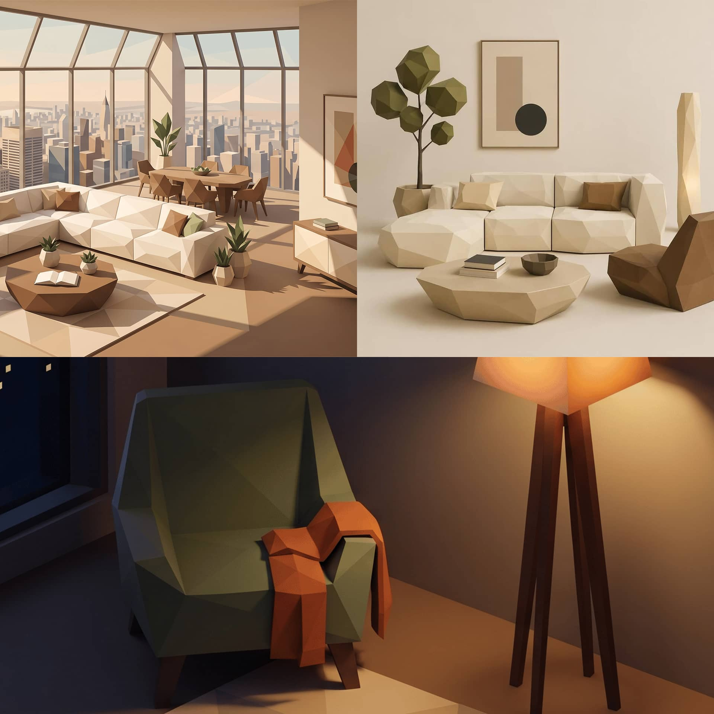
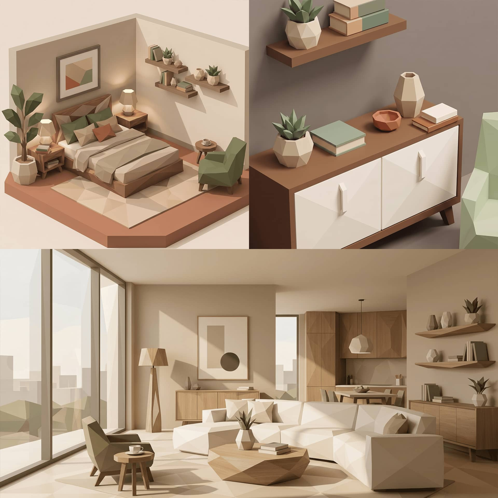
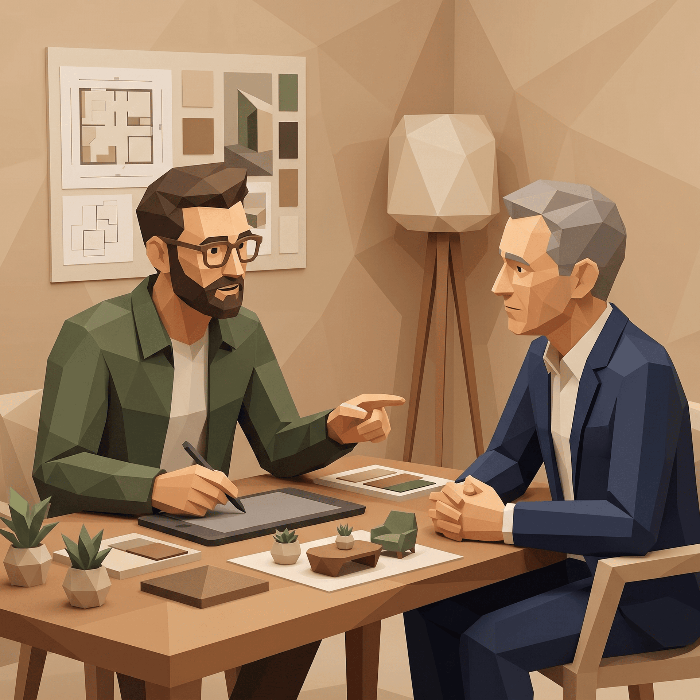

Referenz — Klagenfurt am Wörthersee
Villa Wörthersee — vom Familienhaus zum Lebensraum für zwei.
Ausbau und Neuinterpretation einer Bestandsvilla direkt am See: gleiche Adresse, neues Leben. Ein Human-Centered-Living-Design-Projekt von Richard Atelier.

Ausgangslage
Eine Villa aus den späten Siebzigern — viel Substanz, wenig Bezug zum See.
Drei Ebenen, kompakte Zimmer, dunkle Erschließung. Die Lage direkt am Wörthersee wurde vom bestehenden Grundriss kaum genutzt — Garage und Keller standen leer, die besten Blicke gehörten dem Flur.

Lebenskonzept
Nicht: wie soll das Haus aussehen? Sondern: wie leben die beiden jetzt — und wer kommt dazu?
Vor über zwanzig Jahren für eine vierköpfige Familie gebaut, sind die Kinder heute in Wien und London zuhause. Aus dem Familienhaus sollte ein Rückzugsort für zwei werden — der sich in wenigen Handgriffen wieder öffnet: für Enkelkinder, für Freunde, für die Tochter, die inzwischen ein eigenes Keramik-Atelier führt und bei Besuchen einen Arbeitsraum braucht.

Raumgefühl
Eine Sichtachse vom Eingang bis zum Wasser.
Eiche im privaten Bereich, heller Naturstein in den halb-öffentlichen Zonen — der Materialwechsel wird zur Orientierung. Tief gezogene Fensterbänder holen den See ins Erdgeschoss, während sich die Rückzugsräume bewusst introvertiert und warm anfühlen. Deckenhöhen atmen mit: großzügig im Wohnraum, geborgen im Schlafbereich.
Gesamtkonzept
Kein Abriss. Eine Übersetzung.
Die äußere Kubatur der Siebziger-Jahre-Villa blieb erhalten — verändert hat sich, wie das Haus innen gelebt wird:
- Garage → Atelier mit Nordlicht
- Geschlossene Küche → offene Wohnküche mit Seeblick
- Ungenutzter Keller → Wellnessbereich mit Sauna und Pool
- Drei kleine Gästezimmer → eine flexible Gästesuite
- Veranda → durchgehende Terrasse mit Stegzugang
- ObjektVilla, Baujahr 1978
- OrtKlagenfurt am Wörthersee
- Wohnfläche320 m²
- Grundstück1.400 m² Seegrundstück
- LeistungenHuman-Centered Living Design, Innenarchitektur, Lichtplanung
- Planung & Umsetzung8 + 14 Monate
Ihr Projekt
Auch Ihr Zuhause hat ein zweites Kapitel.
Ob Ausbau, Neubau oder Neuinterpretation — Richard begleitet Sie vom ersten Strich an.
Jetzt Anfrage stellenNew York